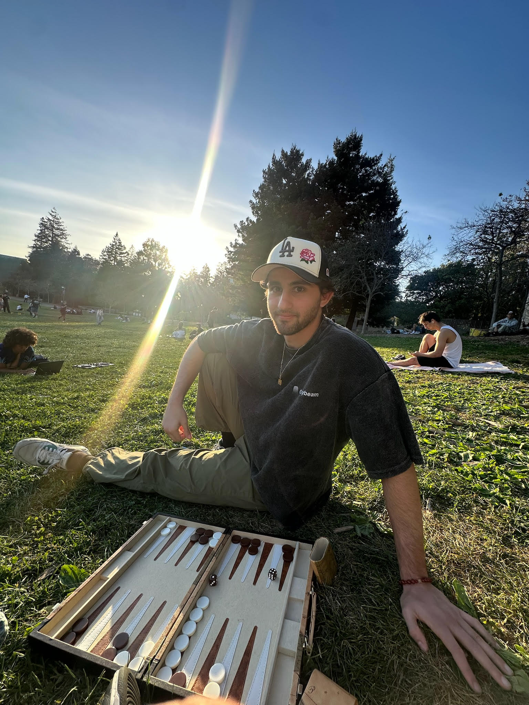

Ardalan Valadkhani
I'm just another person who is interested in many things. Outside of that, I work as a Member of
Technical Staff at Greybeam.
Previously I was an undergraduate researcher at the
UC Berkeley Sky Computing Lab.
A glimpse into the future: I'm looking forward to what graduate school entails.
Things I like:
- Training martial arts (Muay Thai and Wrestling)
- Reading (CS, Math, and Philosophy mainly)
- Having warm tea over a game of backgammon
- My mom (shoutout mom)
Feel free to reach out to me at ardalanv@berkeley.edu!